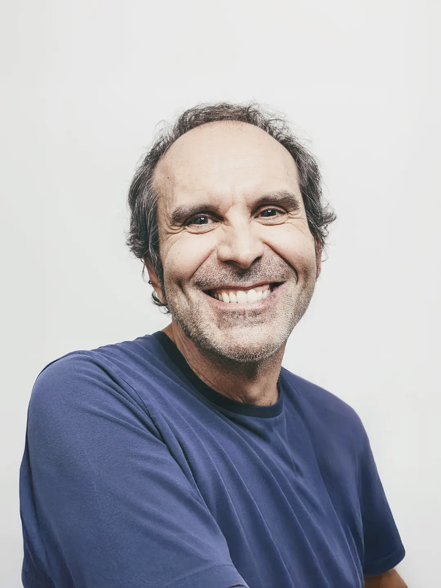
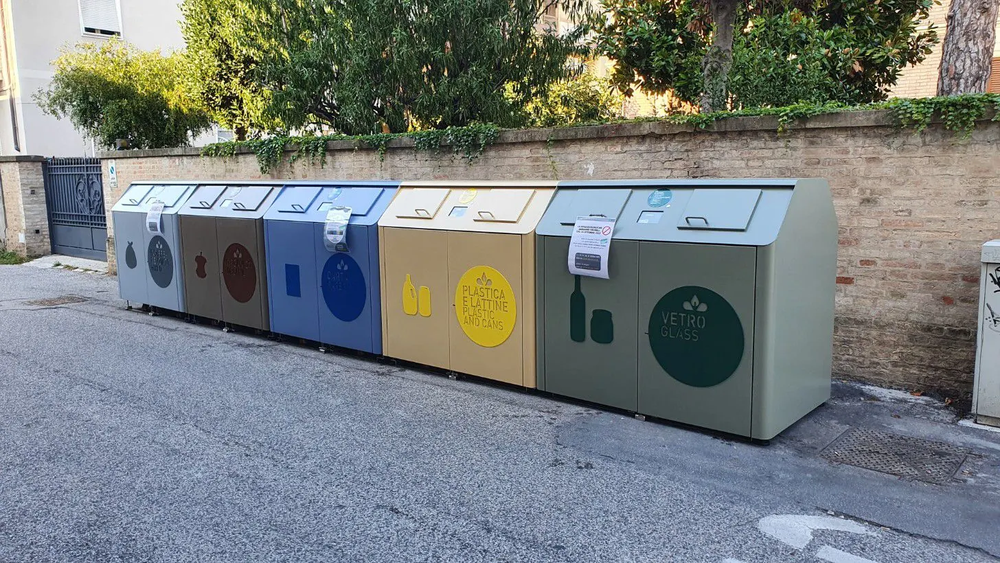
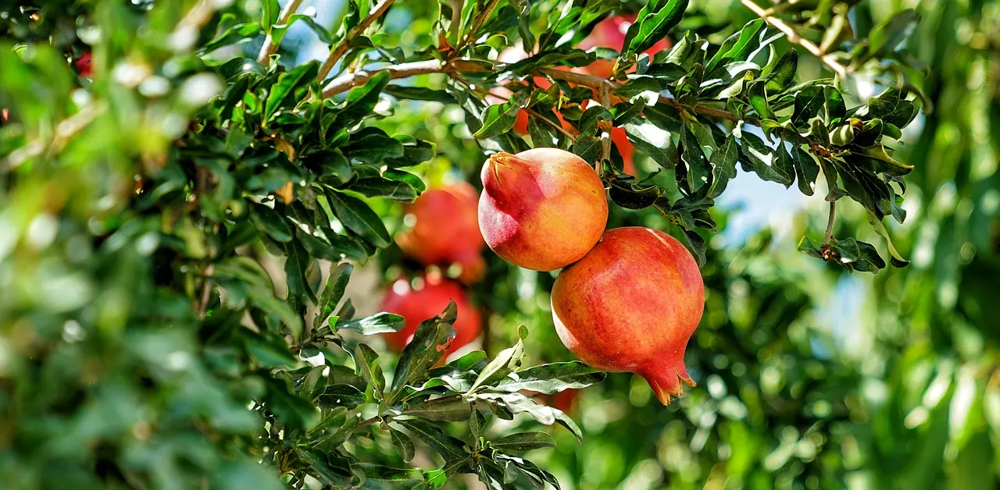
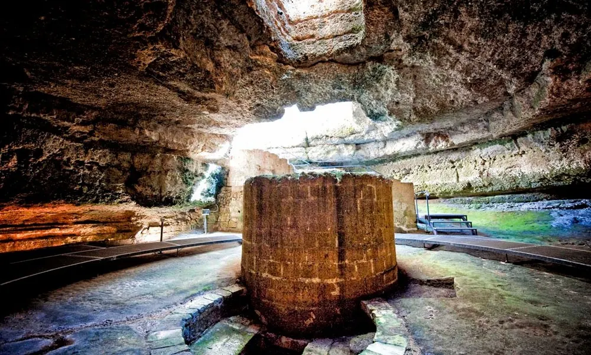
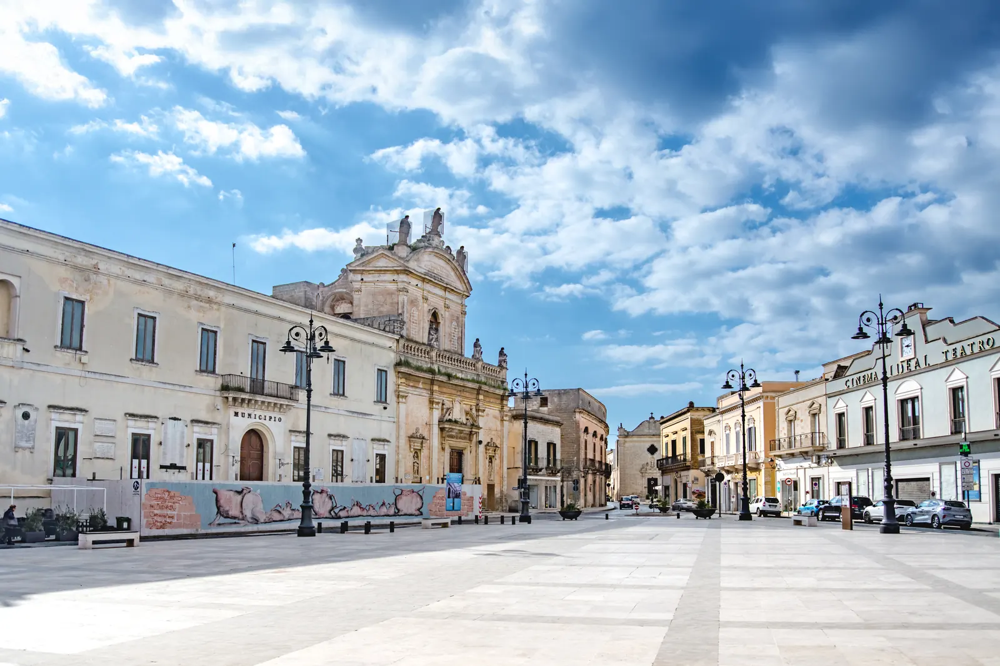
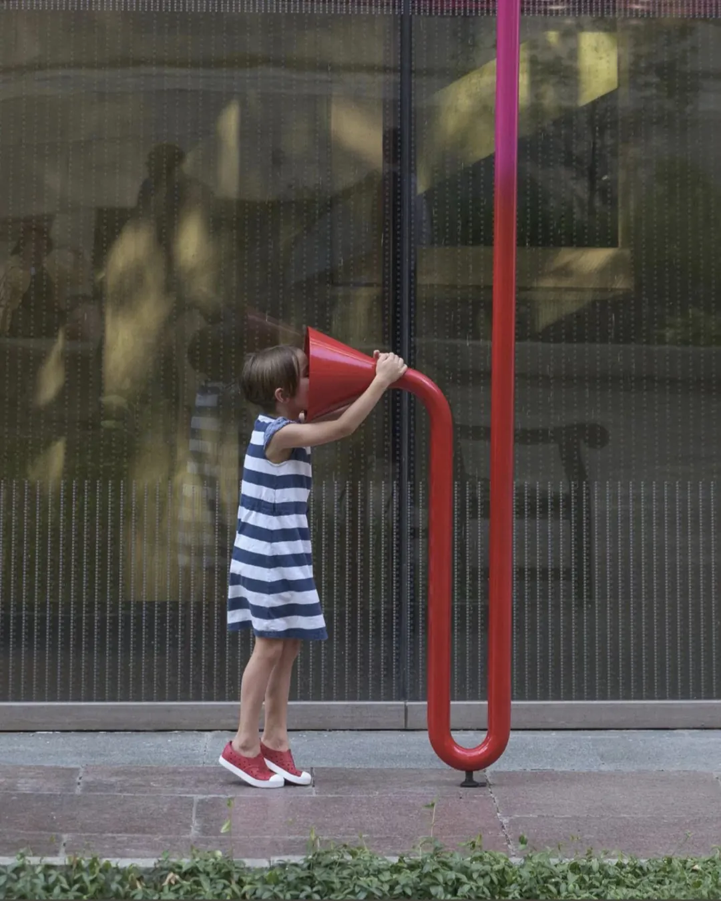
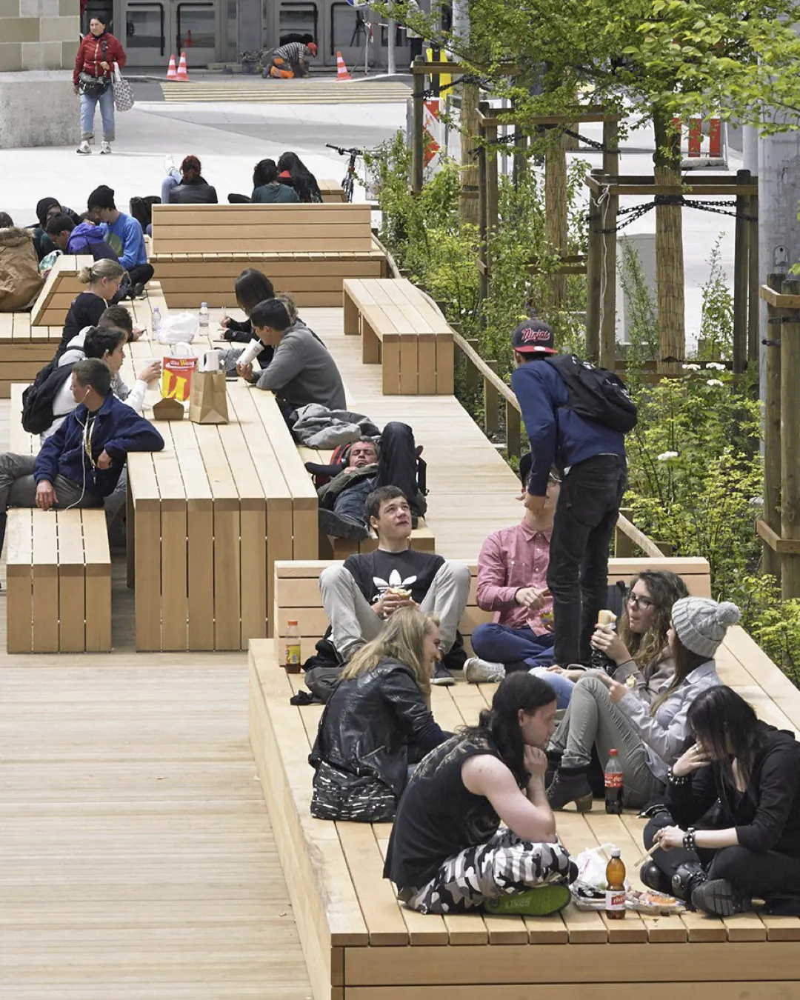
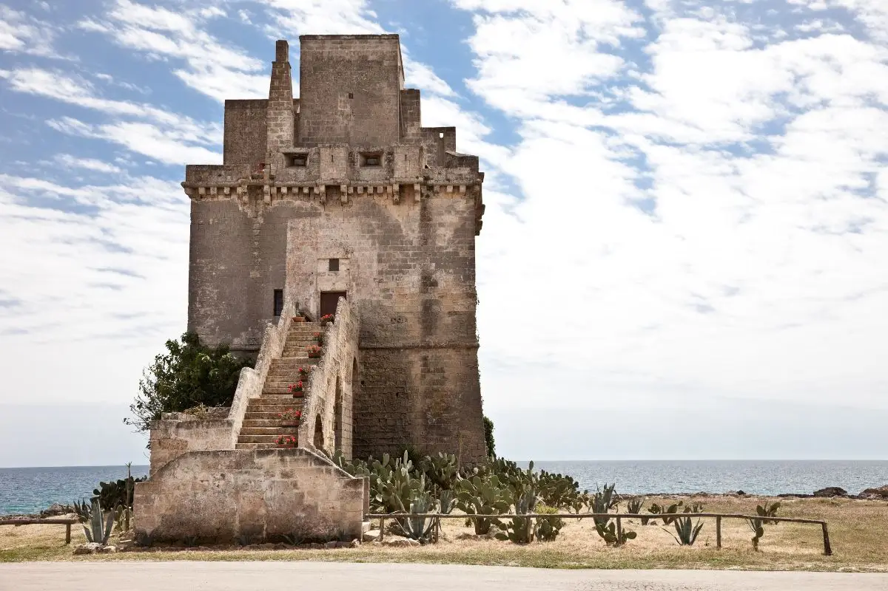
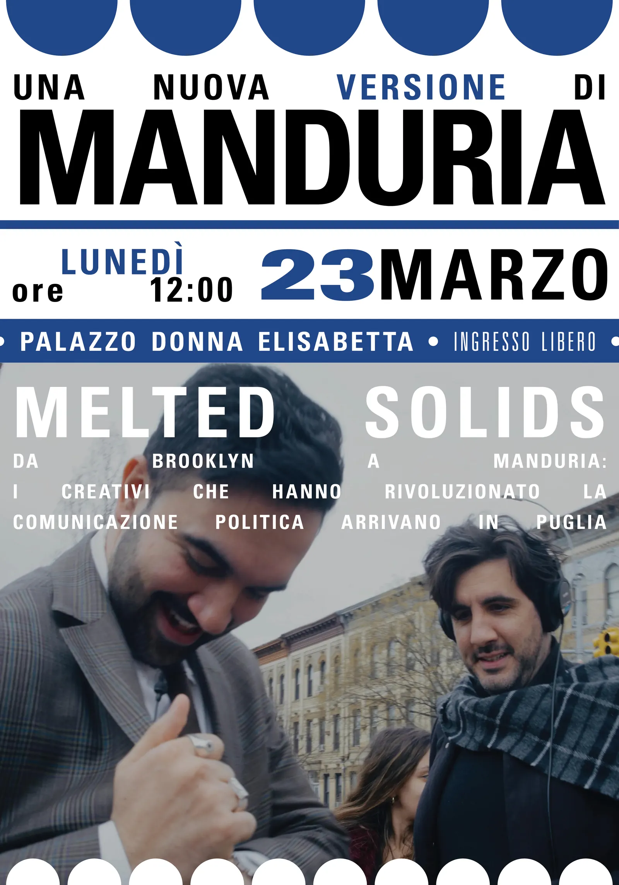

Il 24 e 25 maggio 2026 votiamo per migliorare Manduria.

FERDINANDO ARNÒ SINDACO
Compositore, arrangiatore e produttore musicale di rilievo internazionale, fondatore di quiet, please!, casa di produzione, boutique label e studio di registrazione con sede a Milano. Nel corso della sua carriera ha collaborato con artisti, musicisti e registi di fama mondiale, contribuendo alla realizzazione di produzioni musicali, cinematografiche e pubblicitarie di grande rilievo.
Negli studi di quiet, please! hanno registrato, tra gli altri, Justin Bieber, Kanye West, Devendra Banhart, Benjamin Clementine, CocoRosie, Melanie De Biasio e Selah Sue.
Esperienza professionale
Ha inoltre firmato musiche e arrangiamenti per campagne pubblicitarie di importanti marchi internazionali, collaborando con registi come Gabriele Salvatores, Michel Gondry, Spike Lee, Matteo Garrone ed Emanuele Crialese.
Nel panorama musicale italiano ha collaborato con numerosi artisti di primo piano, contribuendo alla scoperta e alla produzione di talenti come Malika Ayane e Raphael Gualazzi. Ha diretto l'orchestra del Festival di Sanremo e lavorato con personalità del mondo musicale quali Andrea Bocelli, Ennio Morricone e Vince Mendoza.
Sue composizioni e arrangiamenti sono stati utilizzati in produzioni cinematografiche italiane e internazionali, oltre che in importanti progetti culturali e artistici. Tra le esperienze più significative figurano la produzione dell'album collettivo "The Gathering", vincitore del Premio Tenco 2022, e numerosi progetti che uniscono musica, sperimentazione artistica e ricerca culturale.
Formazione e riconoscimenti
Diplomato al Berklee College of Music di Boston in improvvisazione jazz, ha ricevuto numerosi riconoscimenti nazionali e internazionali nel campo musicale e della produzione artistica, tra cui il Premio Tenco, premi legati al Festival di Sanremo e riconoscimenti per la produzione musicale e pubblicitaria.
Nel 2019 il Comune di Manduria gli ha conferito il Premio San Gregorio Magno come eccellenza manduriana distintasi a livello internazionale.
La squadra
 Alessandra Arcadini
Alessandra Arcadini

Professionista con esperienza nei settori sportivo, giudiziario e sociale. Istruttrice di arti marziali e cintura nera di Kickboxing e Brazilian Jiu-Jitsu, svolge attività di formazione sportiva e accompagnamento di atleti agonisti, promuovendo valori di disciplina, rispetto e inclusione. Ha maturato esperienza come stenotipista presso i Tribunali Civili e Penali di Taranto e Bari e nel settore logistico dei servizi postali. Attiva anche in progetti sociali internazionali. Diplomata in ambito linguistico, ha sviluppato una buona conoscenza delle lingue straniere attraverso studi e viaggi all'estero.
 Luca Attanasio
Luca Attanasio

Imprenditore vitivinicolo e titolare di azienda agricola, impegnato nella gestione dell'intera filiera produttiva, dalla coltivazione dei vigneti alla commercializzazione del prodotto finito. Ha maturato una consolidata esperienza nei processi agronomici, enologici e organizzativi legati al settore vitivinicolo. Diplomato in Ragioneria presso l'Istituto Einaudi di Manduria, conosce inglese e francese.
 Marco Bay
Marco Bay

Architetto e paesaggista, laureato al Politecnico di Milano, è fondatore dello Studio Marco Bay, attivo in Italia e in Europa nel campo della progettazione del paesaggio, della riqualificazione urbana e del restauro di giardini storici. Nel corso della carriera ha collaborato a importanti progetti architettonici e ambientali, ricoprendo anche il ruolo di esperto di verde urbano nella Commissione Edilizia del Comune di Milano. È autore di pubblicazioni dedicate all'architettura del paesaggio e collabora con riviste specializzate del settore.
 Roberto Ciliberti
Roberto Ciliberti

Imprenditore con una lunga esperienza nel settore della vigilanza e della sicurezza privata, maturata in oltre trent'anni di attività professionale presso l'Istituto di Vigilanza Folgore Due di Manduria, dove ha svolto incarichi amministrativi, operativi e societari. Negli ultimi anni si è dedicato anche al settore turistico e ricettivo. Attivo nel mondo associativo sportivo, è socio fondatore di associazioni dedicate alle discipline invernali.
 Simona Daversa
Simona Daversa

Professionista della comunicazione, speaker radiofonica e conduttrice di eventi culturali e iniziative pubbliche. Ha sviluppato competenze nella divulgazione, nell'intrattenimento e nella comunicazione con il territorio, con particolare attenzione alla partecipazione civica e alla promozione culturale. Diplomata in Ragioneria, è laureanda in Arts, Music and Performing Arts. Possiede certificazioni informatiche e linguistiche.
 Francesco Di Lauro
Francesco Di Lauro

Avvocato con consolidata esperienza nel diritto ambientale, nella tutela del paesaggio e nella difesa del patrimonio naturalistico. Da anni svolge attività professionale a Manduria, occupandosi di tutela ambientale, abusivismo edilizio e procedimenti legati alla salvaguardia del territorio. Laureato in Giurisprudenza presso l'Università degli Studi di Siena, è iscritto all'Ordine degli Avvocati di Taranto e ha maturato una lunga esperienza nell'ambito delle associazioni ambientaliste.
 Arcangelo Durante
Arcangelo Durante

Già dipendente civile del Ministero della Difesa presso l'Arsenale Militare Marittimo di Taranto, ha maturato una lunga esperienza nel settore pubblico e amministrativo. Ha ricoperto il ruolo di consigliere comunale del Comune di Manduria per due mandati amministrativi, contribuendo alla vita istituzionale e civica della comunità.
 Sonia Gennari
Sonia Gennari

Estetista specializzata con esperienza pluriennale nei settori della medicina estetica, del benessere e della cura della persona. Ha lavorato presso centri estetici e strutture specializzate tra Lecce e Taranto, occupandosi di trattamenti viso e corpo, utilizzo di tecnologie professionali e gestione dei servizi estetici. Ha seguito numerosi percorsi di formazione e aggiornamento professionale nel campo dell'estetica, del trucco professionale e della cura della persona.
 Giuseppe Guida
Giuseppe Guida

Docente di ruolo, scultore ed esperto in beni culturali, con una lunga esperienza nell'insegnamento delle discipline artistiche e nella valorizzazione del patrimonio culturale. Ha svolto attività di restauro, curatela e allestimento di mostre in diverse città italiane ed è stato Ispettore Onorario presso la Soprintendenza ai Beni Culturali. Laureato in Scultura presso l'Accademia di Belle Arti di Lecce, ha conseguito numerose abilitazioni all'insegnamento.
 Raffaele Ildebrando Pinto
Raffaele Ildebrando Pinto

Industrial designer e consulente creativo con esperienza nella progettazione industriale, nella comunicazione visiva e nello sviluppo di prodotti innovativi per il settore manifatturiero. Nel corso della carriera ha collaborato con realtà produttive e formative, occupandosi di design di prodotto, ricerca e sviluppo, grafica pubblicitaria e consulenza creativa. Ha inoltre partecipato a progetti educativi e sociali rivolti ai giovani.
 Giuseppe Prudenzano
Giuseppe Prudenzano

Già autista di autobus nel trasporto pubblico locale, ha maturato una lunga esperienza professionale nel servizio ai cittadini, occupandosi della conduzione dei mezzi, della sicurezza e dell'assistenza ai passeggeri. Pensionato, è riconosciuto per affidabilità, senso del dovere e attenzione alle relazioni con il pubblico.
 Agostino Quaranta
Agostino Quaranta

Fotografo professionista con una carriera sviluppata tra Firenze, Milano e Manduria, oggi impegnato anche nel settore vitivinicolo come produttore di Primitivo di Manduria. Nel corso degli anni ha collaborato con importanti riviste nazionali e internazionali, realizzando reportage fotografici, ricerche iconografiche e progetti culturali dedicati al territorio e all'ambiente. Attualmente unisce l'attività agricola alla valorizzazione culturale e paesaggistica del territorio.
 Floriana Rizzo
Floriana Rizzo

Imprenditrice agricola e attivista culturale, impegnata da anni nella gestione dell'azienda di famiglia e nella promozione di iniziative sociali, educative e associative. Cofondatrice dell'associazione "La Tana del Folletto", promuove attività ludiche e formative rivolte ai più giovani, con particolare attenzione ai temi della socialità, del rispetto delle regole e del contrasto al bullismo e al gioco d'azzardo patologico. Ha inoltre partecipato a esperienze di sperimentazione culturale e sociale nel territorio.
 Rita Rodia
Rita Rodia

Laureata in Lingue, Culture e Letterature Straniere presso l'Università del Salento, ha maturato esperienza nell'ambito amministrativo e nella segreteria scolastica. Possiede competenze linguistiche in francese, spagnolo e inglese, oltre a certificazioni informatiche. È interessata ai temi della cultura, della formazione e della valorizzazione del patrimonio artistico.
 Luciana Suma
Luciana Suma

Docente di sostegno nella scuola secondaria di secondo grado, abilitata all'insegnamento di Scienze economico-aziendali. Laureata in Direzione Aziendale presso l'Università di Bologna, ha approfondito i temi dello sviluppo territoriale, del mercato del lavoro e dell'inclusione sociale. Specializzata nelle attività di sostegno didattico agli alunni con disabilità, svolge il proprio lavoro con particolare attenzione ai percorsi educativi, alla relazione con gli studenti e alla valorizzazione delle potenzialità individuali.
 Carlo Trisolini
Carlo Trisolini

Fisioterapista laureato presso l'Università degli Studi di Bari Aldo Moro, svolge attività professionale nel campo della prevenzione, del recupero motorio e del benessere fisico. Nel proprio lavoro ha sviluppato capacità di ascolto, attenzione alle persone e sensibilità verso le esigenze della comunità, promuovendo l'importanza della salute, dello sport e dei corretti stili di vita.
 Claudio Giovanni Umberto Trotta
Claudio Giovanni Umberto Trotta

Produttore artistico e promotore culturale, fondatore di Barley Arts e Slow Music ETS, è tra i principali protagonisti italiani del settore dello spettacolo dal vivo. Nel corso di quasi cinquant'anni di attività ha prodotto concerti, festival ed eventi culturali di rilievo nazionale e internazionale, contribuendo alla crescita della musica live contemporanea e alla valorizzazione della cultura musicale. Ha collaborato con importanti artisti italiani e internazionali ed è stato insignito dell'Ambrogino d'Oro dal Comune di Milano.
Il programma
Oltre il "porta a porta"
Una nuova gestione della raccolta differenziata
L'attuale sistema di raccolta differenziata ha trasferito gran parte del peso organizzativo direttamente sulle famiglie.
L'attuale sistema di raccolta differenziata ha trasferito gran parte del peso organizzativo direttamente sulle famiglie. Oggi molte abitazioni sono costrette a ospitare contenitori, sacchi e calendari complessi, trasformando gli spazi domestici in piccoli depositi di rifiuti.
Questo modello crea disagi soprattutto nei contesti turistici e nelle Marine, dove residenti temporanei e visitatori non riescono a seguire calendari rigidi e complessi. Il risultato è spesso l'abbandono dei rifiuti e il peggioramento del decoro urbano proprio nei periodi di maggiore affluenza.
Esiste inoltre un problema economico e ambientale: il sistema "porta a porta" spinto richiede una grande quantità di mezzi in circolazione, aumenta traffico, costi e consumi.
Noi crediamo che la vera sostenibilità si costruisca attraverso infrastrutture pubbliche moderne ed efficienti, non scaricando sui cittadini il peso della gestione quotidiana dei rifiuti.
Per questo proponiamo un cambio di paradigma ispirato alle migliori pratiche europee e ai modelli già sperimentati con successo in diverse città italiane.
La nostra proposta
Isole ecologiche intelligenti

Installazione di postazioni moderne ad accesso controllato, utilizzabili tramite tessera o applicazione digitale. Un sistema che permette di:
- migliorare la qualità della raccolta differenziata;
- responsabilizzare i cittadini;
- ridurre l'abbandono dei rifiuti;
- eliminare l'obbligo di conservare i bidoni in casa.
Cassonetti interrati nelle aree più sensibili
Nelle zone centrali, storiche e turistiche proponiamo l'introduzione graduale di sistemi interrati, capaci di:
- ridurre l'impatto visivo;
- diminuire gli odori;
- aumentare la capacità di raccolta;
- migliorare il decoro urbano.
Macro-isole ecologiche di quartiere
Potenziamento dei centri comunali di raccolta per consentire il conferimento semplice e ordinato di materiali ingombranti, apparecchi elettronici e rifiuti speciali.
Riduzione dei costi logistici
Un sistema più moderno consentirà di ridurre il numero di mezzi in circolazione e reinvestire le risorse risparmiate nella pulizia delle strade, nella manutenzione urbana e nei servizi ai cittadini.
L'obiettivo finale è costruire una città più ordinata, efficiente e sostenibile, dove la qualità della raccolta differenziata migliori senza peggiorare la qualità della vita delle persone.
Un paese che profuma
La Villa Comunale come giardino civico produttivo
Molte città europee stanno riscoprendo il valore degli alberi da frutto negli spazi pubblici. Non soltanto elementi ornamentali, ma risorse vive capaci di produrre ombra, bellezza, profumi e persino nuove economie locali.
Anche Manduria può intraprendere questa strada.
La nostra proposta è trasformare la Villa Comunale in un grande giardino civico produttivo: un luogo bello da vivere, capace di raccontare il paesaggio mediterraneo e l'identità agricola del territorio.
Non un semplice parco ornamentale, ma un luogo dove passeggiare significhi anche riconoscere i profumi, i colori e i frutti della nostra terra.
Gli alberi della Villa

Immaginiamo una Villa Comunale arricchita da: aranci, limoni, melograni, fichi, gelsi, mandorli, carrubi, fichi d'India, noci.
Un patrimonio vegetale che restituisca ombra, biodiversità e identità mediterranea agli spazi pubblici.
Una Villa che educa e produce valore
La nuova Villa Comunale potrà diventare:
- uno spazio educativo per le scuole, dedicato alla stagionalità, alla potatura e alla conoscenza delle piante;
- un luogo di memoria e incontro per gli anziani;
- uno spazio attrattivo per residenti e turisti;
- un piccolo laboratorio di economia locale.
La raccolta dei frutti potrà infatti alimentare micro-produzioni locali: marmellate, conserve, spremute e altri prodotti legati all'identità del territorio.
L'obiettivo è costruire una città più bella e vivibile, dove il verde urbano non sia soltanto decorazione ma anche cura, identità e partecipazione collettiva.
Manduria può diventare davvero un "paese da mordere": una città che profuma, accoglie e lascia un ricordo autentico.
Manduria, una città in sintonia
L'Indice di Vitalità
I numeri da soli non bastano a raccontare una città. Una comunità si misura soprattutto attraverso ciò che accade nei suoi spazi pubblici, nella qualità delle relazioni, nella capacità di generare partecipazione e senso di appartenenza.
Per questo proponiamo l'introduzione di un Indice di Vitalità Urbana, uno strumento capace di osservare e valutare la qualità reale della vita cittadina.
L'Indice di Vitalità si basa su quattro dimensioni principali:
- Vita pubblica: come le persone utilizzano gli spazi pubblici, si incontrano, partecipano e vivono la città.
- Qualità dello spazio urbano: comfort, accessibilità, presenza di servizi, cura degli spazi e qualità ambientale.
- Vita economica: solidità e varietà delle attività commerciali, capacità attrattiva del territorio e sostegno all'economia locale.
- Identità e appartenenza: la relazione emotiva tra cittadini e territorio, il valore culturale dei luoghi e il senso di comunità.
Una città vitale è una città che genera energia, opportunità e nuove esperienze. Ma è anche una città capace di cura, inclusione e accoglienza.
Per noi amministrare significa ascoltare il "polso" della città e costruire politiche pubbliche che migliorino concretamente la qualità della vita quotidiana.
Manduria città spugna
Una nuova idea di gestione dell'acqua urbana
I cambiamenti climatici stanno rendendo sempre più frequenti eventi meteorologici estremi, con piogge intense concentrate in tempi molto brevi. Le città costruite senza adeguati sistemi di assorbimento e drenaggio rischiano allagamenti, danni e sprechi di risorse.

Per questo proponiamo il modello della "città spugna": una città capace di trattenere, assorbire e riutilizzare l'acqua piovana invece di disperderla rapidamente nelle reti fognarie.
L'obiettivo è aumentare la resilienza urbana attraverso:
- nuove superfici drenanti;
- maggiore presenza di verde urbano;
- sistemi di raccolta e riutilizzo delle acque piovane;
- riduzione del consumo di suolo impermeabile;
- interventi di rigenerazione urbana sostenibile.
Una città più verde e permeabile significa anche più ombra, meno calore estivo, maggiore qualità ambientale e una migliore gestione delle emergenze climatiche.
Manduria deve prepararsi al futuro attraverso infrastrutture intelligenti e sostenibili, capaci di proteggere il territorio e migliorare la vita quotidiana dei cittadini.
Accendiamo il cinema spento
Restituire vita culturale e socialità al cuore della città
Per generazioni di manduriani il Cinema Ideal non è stato soltanto una sala cinematografica. È stato un luogo di incontro, memoria collettiva e vita cittadina. In Piazza Garibaldi, nel cuore di Manduria, intere famiglie hanno condiviso film, estati, serate sotto le stelle e momenti che sono diventati parte dell'identità della città.
Oggi quello spazio è chiuso. Una serranda abbassata nel centro della piazza principale, un edificio lasciato progressivamente al degrado, con strutture e impianti che rischiano di deteriorarsi definitivamente.
Noi crediamo che Manduria non possa permettersi di lasciare spento uno dei suoi luoghi simbolici. Una piazza viva ha bisogno di spazi culturali vivi.
Un progetto di recupero e rigenerazione urbana

L'obiettivo è avviare un percorso concreto per il recupero del Cinema Ideal e la sua restituzione alla città attraverso una nuova funzione culturale, sociale e pubblica.
L'amministrazione comunale deve utilizzare tutti gli strumenti previsti dalla legge per affrontare situazioni di abbandono che incidono sul decoro urbano e sulla qualità della vita cittadina: dialogo con la proprietà, strumenti urbanistici, vincoli, procedure di interesse pubblico e, se necessario, percorsi amministrativi più incisivi.
L'idea è trasformare quello spazio in un nuovo punto di riferimento per Manduria:
- cinema e programmazione culturale;
- incontri, musica ed eventi;
- attività dedicate ai giovani;
- spazio pubblico per la comunità;
- luogo di aggregazione aperto tutto l'anno.
Recuperare il Cinema Ideal significa anche restituire energia a Piazza Garibaldi, sostenere le attività del centro storico e riportare persone, relazioni e cultura nel cuore della città.
Una città con le luci accese
Rigenerare gli spazi abbandonati non è soltanto una questione estetica. È una scelta politica e culturale. Significa contrastare il degrado, valorizzare la memoria collettiva e costruire nuove opportunità per il futuro.
Manduria merita una piazza viva, illuminata e attraversata dalle persone, non edifici chiusi destinati all'abbandono.
La piazza delle famiglie
Piazza Giovanni XXIII: da "Piazza Tubi" alla piazza delle famiglie
Piazza Giovanni XXIII oggi viene spesso chiamata "Piazza Tubi". Un soprannome che racconta bene la distanza tra ciò che questo luogo avrebbe potuto rappresentare e ciò che invece è diventato: uno spazio grande, assolato, poco vissuto e poco accogliente.
L'attuale configurazione della piazza non favorisce la socialità quotidiana. Mancano ombra, comfort, verde e spazi realmente pensati per i bambini e le famiglie. Il piccolo parco giochi recintato, con pavimentazione in gomma nera, nelle ore più calde diventa inutilizzabile.
Noi immaginiamo una piazza diversa: una piazza viva, aperta, attraversabile e inclusiva, capace di diventare il cuore della vita pubblica cittadina.
L'ispirazione arriva dalle esperienze europee di rigenerazione urbana che hanno trasformato gli spazi pubblici in luoghi di incontro e partecipazione. Una città che invita le persone a stare insieme, a giocare e a vivere gli spazi comuni è una città che crede nel proprio futuro.
La nostra proposta è trasformare Piazza Giovanni XXIII nella vera piazza delle famiglie di Manduria. Non un piccolo spazio giochi chiuso dentro la piazza, ma l'intera piazza pensata come luogo di incontro per tutte le generazioni.
Cosa vogliamo realizzare:


- nuove alberature per creare ombra e migliorare il comfort climatico;
- pavimentazioni chiare e sostenibili, capaci di ridurre il calore;
- aree d'acqua e spazi freschi per il periodo estivo;
- percorsi ludici e naturali integrati nella piazza;
- sedute mobili e spazi flessibili per eventi, letture, musica e attività culturali;
- materiali semplici, durevoli e accessibili;
- piena accessibilità per persone con difficoltà motorie.
L'obiettivo è restituire alla città uno spazio pubblico che favorisca spensieratezza, socialità e qualità della vita. Perché una città che non riesce a garantire serenità e benessere alle proprie famiglie perde una parte importante della propria identità.
ONDÆ – Il museo della musica che non c'è
Cultura, identità e infrastrutture per una nuova Manduria
Manduria ha bisogno di una visione capace di unire cultura, sviluppo e qualità della vita. ONDÆ nasce da questa idea: trasformare la musica in uno strumento di aggregazione, crescita economica e valorizzazione del territorio. Un progetto culturale internazionale che può rendere Manduria un punto di riferimento nel Mediterraneo, creando nuove opportunità per cittadini, giovani, imprese e turismo.
Un museo unico al mondo
ONDÆ sarà un museo diffuso dedicato alla musica inedita e irripetibile. Brani originali, performance e composizioni create appositamente per il progetto, custodite e ascoltabili esclusivamente negli spazi del museo. Un'esperienza culturale unica, non disponibile online, che restituisce valore all'ascolto e al rapporto tra luogo, arte e comunità.
Il progetto coinvolgerà diversi luoghi simbolici del territorio manduriano:
- il Municipio, come punto di accoglienza e orientamento del percorso culturale;
- le masserie storiche, dedicate a residenze artistiche, laboratori e sale d'ascolto;
- Torre Colimena, con la "Ca(s)sa Armonica", spazio dedicato alle sonorità e alle culture del Mediterraneo.

Cultura come motore di sviluppo
ONDÆ non è soltanto un museo. È un progetto di rigenerazione urbana, culturale ed economica. L'obiettivo è portare a Manduria visitatori, artisti, giornalisti, investimenti e nuove opportunità di lavoro, valorizzando il patrimonio storico e paesaggistico della città.
Il progetto potrà generare:
- turismo culturale di qualità;
- valorizzazione di masserie, torri costiere e spazi pubblici;
- nuova occupazione nei settori culturali, turistici e dell'accoglienza;
- crescita dell'economia locale;
- maggiore visibilità internazionale per Manduria.
Prima di tutto: infrastrutture e qualità urbana
Per sostenere un progetto internazionale serve una città più moderna, accessibile e curata. Per questo ONDÆ sarà accompagnato da un piano di miglioramento delle infrastrutture urbane: rifacimento delle strade, collegamenti con la costa e le masserie, segnaletica, illuminazione e riqualificazione degli spazi pubblici.
L'obiettivo è semplice: portare Manduria all'altezza del proprio potenziale, costruendo una città più bella, più funzionale e più attrattiva per chi la vive ogni giorno e per chi arriverà da fuori.
Una città che unisce
ONDÆ nasce da un'idea precisa: la musica è uno dei linguaggi più potenti di aggregazione sociale. In un tempo segnato da divisioni e frammentazioni, Manduria può diventare un luogo di incontro, dialogo e armonia tra culture, generazioni e persone diverse.
Un progetto culturale concreto, capace di mettere al centro identità, partecipazione e futuro.
Manduria laboratorio culturale internazionale
Cultura, innovazione e nuovi linguaggi per costruire il futuro
Manduria può diventare un luogo capace di attrarre idee, creatività e relazioni internazionali. Non una periferia culturale che rincorre ciò che accade altrove, ma un territorio che produce nuove visioni e nuove forme di partecipazione contemporanea.
Negli ultimi anni la comunicazione, la politica e la cultura stanno cambiando profondamente. Sempre più spesso il valore di un'esperienza non nasce dalla quantità di contenuti disponibili, ma dalla qualità della presenza, dall'incontro tra persone, territori e linguaggi diversi.
È da questa idea che nasce il progetto di costruire un ponte culturale e operativo tra Manduria e alcune delle realtà creative più innovative del panorama internazionale.
Una rete internazionale per Manduria
L'incontro con realtà internazionali come Melted Solids — collettivo creativo statunitense attivo nei campi della comunicazione, dei media e della narrazione digitale — rappresenta un esempio concreto di questo percorso: portare a Manduria competenze, esperienze e relazioni capaci di generare nuove opportunità culturali e professionali.

L'obiettivo non è organizzare eventi isolati, ma creare un ecosistema stabile di confronto tra:
- cultura;
- comunicazione;
- musica;
- creatività;
- territorio;
- giovani professionisti e artisti.
Manduria può diventare un luogo di sperimentazione culturale contemporanea, aperto al Mediterraneo e alle reti internazionali.
Una città che produce idee
La sfida è trasformare Manduria in un luogo dove possano nascere progetti nuovi, contaminazioni culturali e collaborazioni internazionali. Una città capace di attrarre artisti, creativi, professionisti e nuove energie, valorizzando il proprio patrimonio storico, paesaggistico e umano.
Per noi cultura significa anche sviluppo, relazioni e opportunità. Significa costruire una città che non subisce il cambiamento, ma partecipa a crearlo.
Manduria può diventare un laboratorio culturale aperto, contemporaneo e internazionale, senza perdere la propria identità.